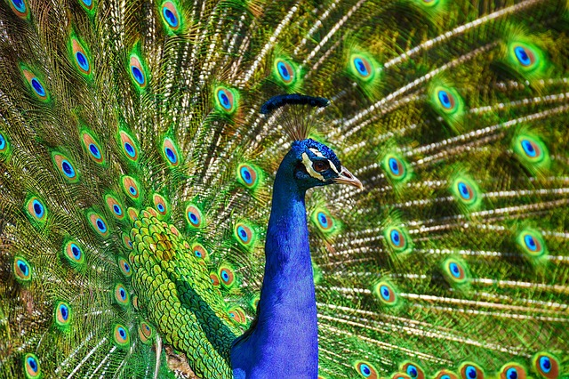

Påfuglen er en stor og staselig fugl i fasanfamilien som opprinnelig kommer fra Asia. Hannen er spesielt kjent for sine skinnende blå og grønne farger og sin enorme halevifte, som han slår ut med fargerike «øye»-mønstre for å tiltrekke seg hunner. Hunnfuglene har på sin side mer nøytrale og brune farger, noe som gir dem god kamuflasje når de ruger på eggene sine. Selv om disse fuglene tilbringer mesteparten av tiden sin på bakken, kan de fly kortere avstander opp i trærne for å sove trygt om natten.